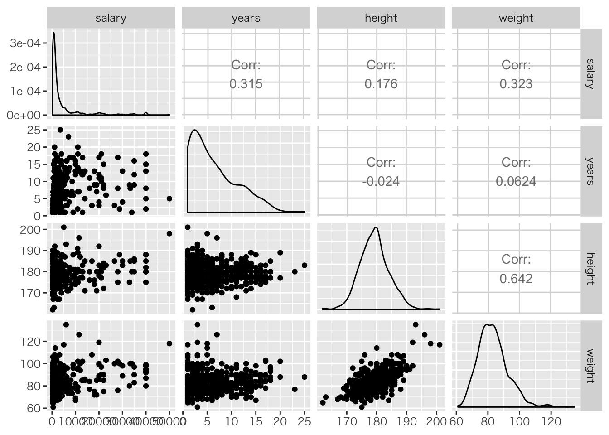
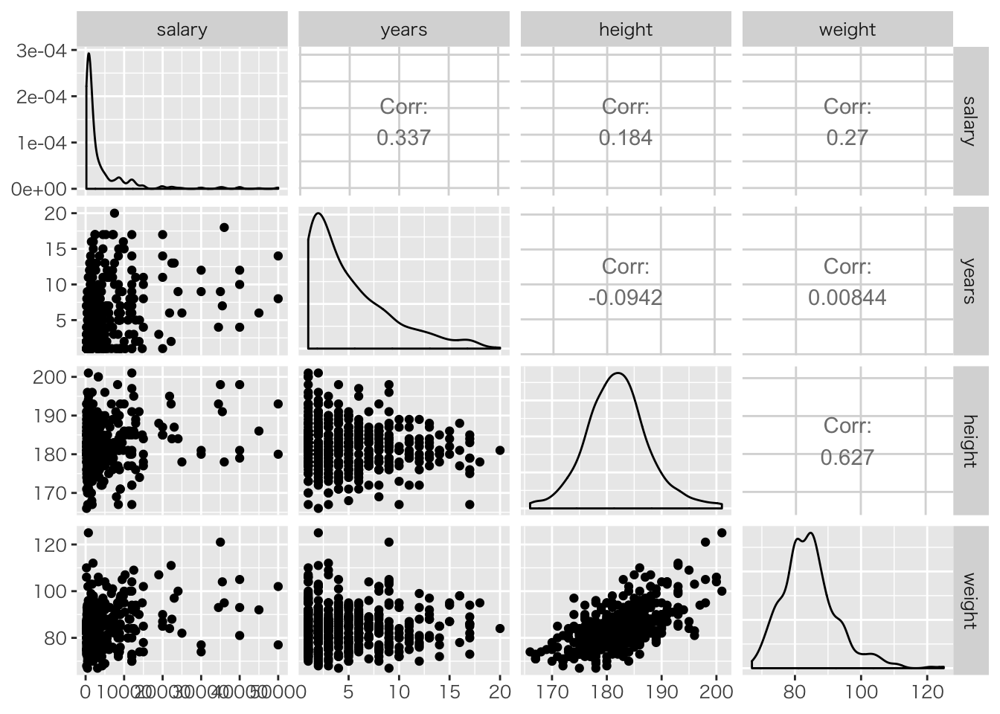
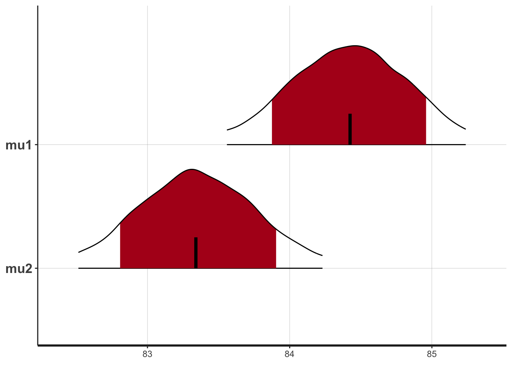
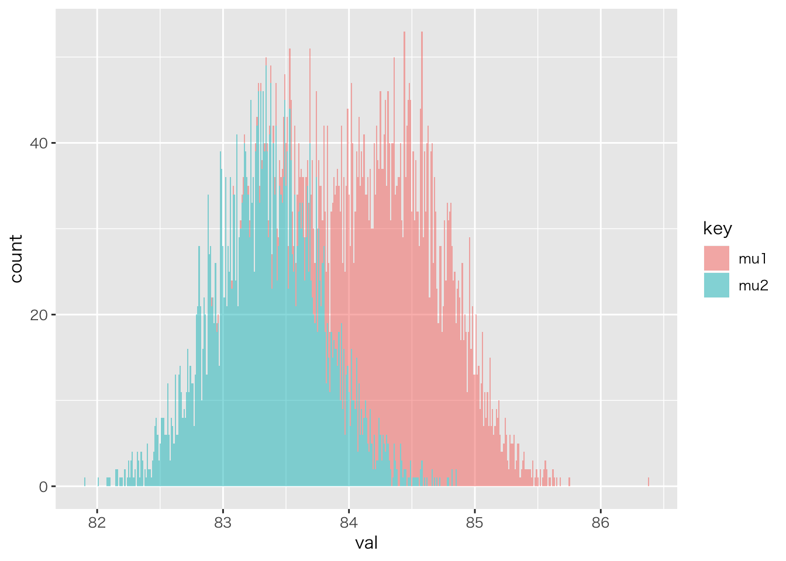
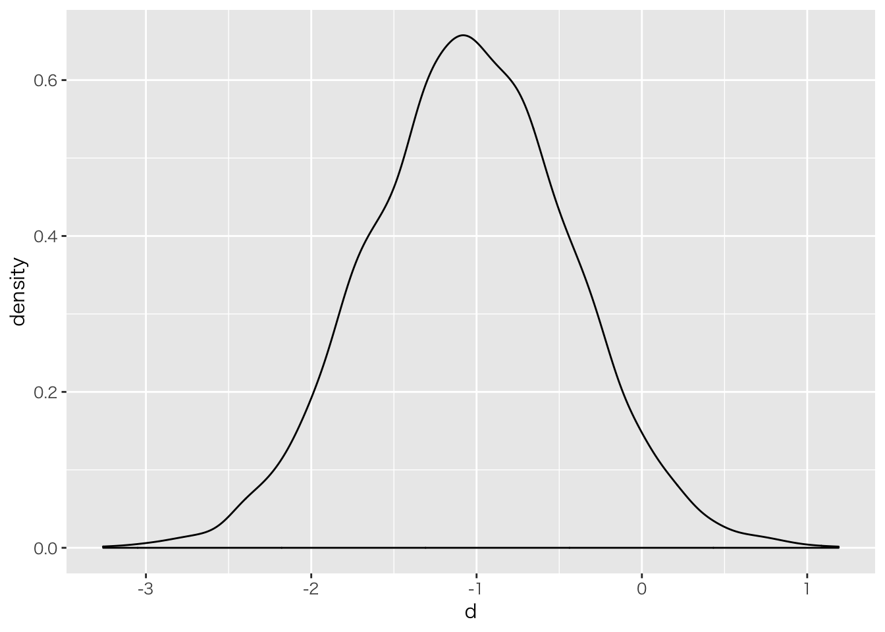
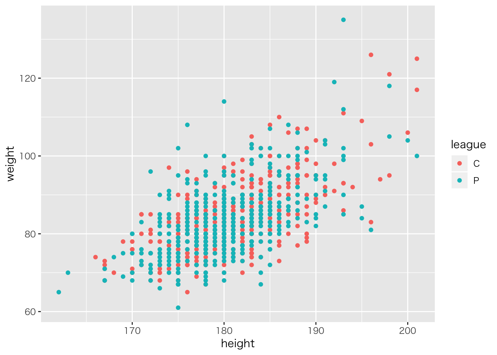

2017年の野球選手データをwebからスクレイピングして来た次のデータセットを使います。
bs <- read_csv("baseball.csv")## Parsed with column specification:
## cols(
## .default = col_integer(),
## Name = col_character(),
## team = col_character(),
## salary = col_double(),
## position = col_character(),
## bloodType = col_character(),
## throw.by = col_character(),
## batting.by = col_character(),
## birth.place = col_character(),
## birth.day = col_date(format = ""),
## 背番号 = col_character(),
## 打率 = col_double(),
## 出塁率 = col_double(),
## 長打率 = col_double(),
## OPS = col_double(),
## RC27 = col_double(),
## XR27 = col_double(),
## 防御率 = col_double(),
## 勝率 = col_double(),
## 投球回 = col_double(),
## WHIP = col_double()
## # ... with 2 more columns
## )## See spec(...) for full column specifications.summarytools::dfSummary(bs) %>% view## Method 'viewer' only valid within RStudio. Switching method to 'browser'.## Output file written: /var/folders/jr/fj1hq52s2_q59dk3tw7tzl3m0000gn/T//RtmpWjjIrC/file26135e3aa60f.html# 可視化
bs %>% filter(position != "投手") %>%
dplyr::select(salary,years, height, weight) %>% ggpairs()
bs %>% filter(position == "投手") %>%
dplyr::select(salary,years, height, weight) %>% ggpairs()
独立な2群のt検定は，二つの独立な正規分布を仮定しているので，それぞれの正規分布の推定で良い。
# 体重とリーグのデータだけ取り出す
df <- bs %>% select("weight","league") %>% na.omit
# 分散の等質の検定
var.test(weight ~ league, data = df)##
## F test to compare two variances
##
## data: weight by league
## F = 0.96886, num df = 457, denom df = 459, p-value = 0.7351
## alternative hypothesis: true ratio of variances is not equal to 1
## 95 percent confidence interval:
## 0.8065286 1.1638969
## sample estimates:
## ratio of variances
## 0.9688556# 等分散性を仮定したt検定
t.test(weight ~ league, data = df, var.equal=T)##
## Two Sample t-test
##
## data: weight by league
## t = 1.7639, df = 916, p-value = 0.07809
## alternative hypothesis: true difference in means is not equal to 0
## 95 percent confidence interval:
## -0.1192178 2.2358687
## sample estimates:
## mean in group C mean in group P
## 84.41485 83.35652model_ttest <- stan_model("ttest_var_equal.stan")## data{
## int<lower=1> N1;
## int<lower=1> N2;
## real X1[N1];
## real X2[N2];
## }
##
## parameters{
## real mu1;
## real mu2;
## real<lower=0> sig;
## }
##
## model{
## // likelihood
## X1 ~ normal(mu1,sig);
## X2 ~ normal(mu2,sig);
## // prior
## mu1 ~ normal(0,100);
## mu2 ~ normal(0,100);
## sig ~ cauchy(0,5);
## }# データをリスト型で渡す。
## N1は第一群のサンプルサイズ（該当する行の数）
## N2は第二群のサンプルサイズ（該当する行の数）
## X1は第一群のデータ（該当する行の該当する変数）
## X2は第二群のデータ（該当する行の該当する変数）
dataset.t <- list(N1 = NROW(df[df$league == "C", ]),
N2 = NROW(df[df$league == "P", ]),
X1 = unlist(df[df$league == "C", "weight"]),
X2 = unlist(df[df$league == "P", "weight"]))
# MCMC!
bayes_ttest <- sampling(model_ttest, dataset.t)
# 表示
bayes_ttest## Inference for Stan model: ttest_var_equal.
## 4 chains, each with iter=2000; warmup=1000; thin=1;
## post-warmup draws per chain=1000, total post-warmup draws=4000.
##
## mean se_mean sd 2.5% 25% 50% 75% 97.5%
## mu1 84.42 0.01 0.43 83.56 84.12 84.42 84.70 85.24
## mu2 83.35 0.01 0.43 82.51 83.06 83.34 83.64 84.23
## sig 9.09 0.00 0.22 8.69 8.94 9.08 9.23 9.53
## lp__ -2485.64 0.03 1.25 -2488.75 -2486.22 -2485.31 -2484.71 -2484.21
## n_eff Rhat
## mu1 3201 1
## mu2 3594 1
## sig 3974 1
## lp__ 1933 1
##
## Samples were drawn using NUTS(diag_e) at Mon Aug 27 21:38:19 2018.
## For each parameter, n_eff is a crude measure of effective sample size,
## and Rhat is the potential scale reduction factor on split chains (at
## convergence, Rhat=1).plot(bayes_ttest, pars = c("mu1", "mu2"), show_density = TRUE)## ci_level: 0.8 (80% intervals)## outer_level: 0.95 (95% intervals)
# 該当する変数を抽出
rstan::extract(bayes_ttest, pars = c("mu1", "mu2")) %>%
# データフレーム型に
data.frame %>%
# ロング型に成形
gather(key, val, factor_key = TRUE) %>%
# 描画
ggplot(aes(x = val, group = key, fill = key)) +
# 透過度alpha=0.5
geom_histogram(binwidth = 0.01, alpha = 0.5)
model.ttest2 <- stan_model("ttest_var_different.stan")## data{
## int<lower=1> N1;
## int<lower=1> N2;
## real X1[N1];
## real X2[N2];
## }
##
## parameters{
## real mu1;
## real mu2;
## real<lower=0> sig1;
## real<lower=0> sig2;
## }
##
## model{
## // likelihood
## X1 ~ normal(mu1,sig1);
## X2 ~ normal(mu2,sig2);
##
## // prior
## mu1 ~ normal(0,100);
## mu2 ~ normal(0,100);
## sig1 ~ cauchy(0,5);
## sig2 ~ cauchy(0,5);
## }bayes_ttest2 <- sampling(model_ttest, dataset.t)
bayes_ttest2## Inference for Stan model: ttest_var_equal.
## 4 chains, each with iter=2000; warmup=1000; thin=1;
## post-warmup draws per chain=1000, total post-warmup draws=4000.
##
## mean se_mean sd 2.5% 25% 50% 75% 97.5%
## mu1 84.40 0.01 0.42 83.58 84.11 84.40 84.69 85.21
## mu2 83.35 0.01 0.43 82.53 83.07 83.35 83.65 84.18
## sig 9.09 0.00 0.20 8.69 8.95 9.09 9.22 9.49
## lp__ -2485.56 0.03 1.18 -2488.65 -2486.05 -2485.29 -2484.71 -2484.22
## n_eff Rhat
## mu1 4000 1
## mu2 4000 1
## sig 4000 1
## lp__ 1735 1
##
## Samples were drawn using NUTS(diag_e) at Mon Aug 27 21:38:23 2018.
## For each parameter, n_eff is a crude measure of effective sample size,
## and Rhat is the potential scale reduction factor on split chains (at
## convergence, Rhat=1).ttest2 <- stan_model("ttest2.stan")## data{
## int<lower=0> N1;
## int<lower=1> N2;
## real X1[N1];
## real X2[N2];
## }
##
## parameters{
## real mu;
## real<lower=0> sig1;
## real<lower=0> sig2;
## real d;
## }
##
## model{
## // likelihood
## X1 ~ normal(mu,sig1);
## X2 ~ normal(mu+d,sig2);
## // prior
## mu ~ normal(0,100);
## sig1 ~ cauchy(0,5);
## sig2 ~ cauchy(0,5);
## d ~ uniform(-50,50);
## }result.ttest <- sampling(ttest2, dataset.t)
result.ttest## Inference for Stan model: ttest2.
## 4 chains, each with iter=2000; warmup=1000; thin=1;
## post-warmup draws per chain=1000, total post-warmup draws=4000.
##
## mean se_mean sd 2.5% 25% 50% 75% 97.5%
## mu 84.41 0.01 0.43 83.58 84.13 84.40 84.69 85.24
## sig1 9.02 0.01 0.30 8.47 8.82 9.02 9.22 9.62
## sig2 9.17 0.00 0.29 8.63 8.96 9.15 9.36 9.78
## d -1.04 0.01 0.61 -2.24 -1.45 -1.05 -0.64 0.16
## lp__ -2484.93 0.03 1.40 -2488.30 -2485.64 -2484.64 -2483.88 -2483.21
## n_eff Rhat
## mu 3038 1
## sig1 3311 1
## sig2 4000 1
## d 3048 1
## lp__ 1741 1
##
## Samples were drawn using NUTS(diag_e) at Mon Aug 27 21:38:26 2018.
## For each parameter, n_eff is a crude measure of effective sample size,
## and Rhat is the potential scale reduction factor on split chains (at
## convergence, Rhat=1).# 差の分布の描画
rstan::extract(result.ttest, pars = "d") %>% data.frame() %>%
ggplot(aes(x = d)) + geom_density()
df <- rstan::extract(result.ttest, pars = "d") %>% data.frame
# 該当する行数/総行数
NROW(df[df$d > 0, ])/NROW(df)## [1] 0.04225NROW(df[(df$d > -2) & (df$d < (-1)), ])/NROW(df)## [1] 0.47175ポイントは「差が0であるかどうか」だけに注目するのではなく，差がどの程度あるか，ある大きさ以上の差がある確率はどれぐらいか，といった仮説も検証できると言うところです。NHSTは\(\mu_1 \neq \mu_2\)だけが考察の対象でしたが，\(\mu_1 < \mu_2\)のような不等号をもった仮説も検証できるのです(情報仮説と言います)。
ここでは生成量を使って様々な仮説を検証する方法について説明します。
model_ttest3 <- stan_model("ttest3.stan")
bayes_ttest3 <- sampling(model_ttest3, dataset.t)効果量は平均値の差を標準偏差で割ったもの。標準偏差を各群で推定している場合，プールした標準偏差に変える必要があります。
# stanfitオブジェクトから必要そうな変数だけ抜き出しておく
result.ttest2 <- rstan::extract(bayes_ttest3,pars=c("mu","d","sig1","sig2","pred1","pred2")) %>% data.frame
# 差と標準偏差を抜き出す
result.ttest2 %>% select("d","sig1","sig2") %>%
# プールされた標準偏差を計算
mutate(poolS = ((sig1*dataset.t$N1)+(sig2*dataset.t$N2))/
(dataset.t$N1+dataset.t$N2)) %>%
# 差を標準偏差で割ると効果量
mutate(cohenD = d/poolS) %>% summary()## d sig1 sig2 poolS
## Min. :-3.4918 Min. : 7.971 Min. : 8.075 Min. :8.343
## 1st Qu.:-1.4612 1st Qu.: 8.821 1st Qu.: 8.968 1st Qu.:8.952
## Median :-1.0535 Median : 9.025 Median : 9.157 Median :9.101
## Mean :-1.0565 Mean : 9.029 Mean : 9.169 Mean :9.099
## 3rd Qu.:-0.6607 3rd Qu.: 9.231 3rd Qu.: 9.361 3rd Qu.:9.242
## Max. : 0.7572 Max. :10.217 Max. :10.319 Max. :9.880
## cohenD
## Min. :-0.38521
## 1st Qu.:-0.16059
## Median :-0.11620
## Mean :-0.11623
## 3rd Qu.:-0.07265
## Max. : 0.08071同じことは生成量を使ってもできます。
model_ttest4 <- stan_model("ttest4.stan")
bayes_ttest4 <- sampling(model_ttest4, dataset.t)
bayes_ttest4## Inference for Stan model: ttest4.
## 4 chains, each with iter=2000; warmup=1000; thin=1;
## post-warmup draws per chain=1000, total post-warmup draws=4000.
##
## mean se_mean sd 2.5% 25% 50% 75% 97.5%
## mu 84.41 0.01 0.42 83.59 84.12 84.40 84.69 85.24
## sig1 9.02 0.00 0.30 8.47 8.81 9.01 9.22 9.63
## sig2 9.17 0.00 0.31 8.59 8.96 9.16 9.37 9.79
## d -1.05 0.01 0.59 -2.24 -1.45 -1.04 -0.65 0.11
## pred1 84.43 0.14 8.93 66.99 78.46 84.43 90.36 101.80
## pred2 83.47 0.15 9.06 66.05 77.29 83.41 89.50 101.04
## cohenD -0.12 0.00 0.06 -0.25 -0.16 -0.11 -0.07 0.01
## lp__ -2484.94 0.03 1.42 -2488.59 -2485.59 -2484.60 -2483.91 -2483.22
## n_eff Rhat
## mu 2569 1
## sig1 3739 1
## sig2 3949 1
## d 2802 1
## pred1 4000 1
## pred2 3841 1
## cohenD 2807 1
## lp__ 1783 1
##
## Samples were drawn using NUTS(diag_e) at Mon Aug 27 21:38:33 2018.
## For each parameter, n_eff is a crude measure of effective sample size,
## and Rhat is the potential scale reduction factor on split chains (at
## convergence, Rhat=1).## 全データ数
NROW(result.ttest2)## [1] 4000## 差が2.5cm以上生じる確率
NROW(result.ttest2 %>% filter(abs(.$d)>2.5))/NROW(result.ttest2)## [1] 0.00875この他，「効果量が基準点cより大きい確率」なども同様に検討することができます。
事後予測分布を使って，今後のデータがどのようになるだろうか，という仮説を立てることも可能です。
## (今後の)セリーグの選手がパリーグの選手よりも体重が大きい確率
sum(result.ttest2$pred1>result.ttest2$pred2)/NROW(result.ttest2)## [1] 0.52475## (今後の)セリーグの選手がパリーグの選手よりも体重が5kg大きい確率
sum(result.ttest2$pred1>(result.ttest2$pred2+5))/NROW(result.ttest2)## [1] 0.36625理解のポイントは次の三点です。
generated quantities ブロックで生成しても良いし，MCMCサンプルから変数を作っても良い事後分布の検証について，あくまでも同時確率空間の中での比較の集計(同じ行についておの比較の集計)であることに注意してください。
(対数)尤度はモデルとデータの当てはまりの程度です。事後対数尤度とは，パラメータの推定が終わった後(事後)，各サンプルから考えられる尤度の一覧であり，「当てはまりの程度」であることから，モデル適合度の検証に使える指標となります。
例えば，t検定で分散が等質であるという仮定を置いた場合と，その仮定を置かない場合のモデル比較を考えます。
生成量で事後対数尤度を算出します。
# log_likを計算するコード
modelA <- stan_model("ttest5a.stan",model_name="var_equal")
modelB <- stan_model("ttest5b.stan",model_name="var_not_equal")
# サンプル生成
resultA <- sampling(modelA, dataset.t)
resultB <- sampling(modelB, dataset.t)
# 事後対数尤度の抽出
resultA %>% rstan::extract(pars="log_lik") -> log_likA
resultB %>% rstan::extract(pars="log_lik") -> log_likB
# パッケージの読み込み
library(loo)
loo(log_likA$log_lik)## Warning: Relative effective sample sizes ('r_eff' argument) not specified.
## For models fit with MCMC, the reported PSIS effective sample sizes and
## MCSE estimates will be over-optimistic.## Warning: Some Pareto k diagnostic values are too high. See help('pareto-k-diagnostic') for details.##
## Computed from 4000 by 918 log-likelihood matrix
##
## Estimate SE
## elpd_loo -1528919.8 217.4
## p_loo 987.0 2.4
## looic 3057839.6 434.9
## ------
## Monte Carlo SE of elpd_loo is NA.
##
## Pareto k diagnostic values:
## Count Pct. Min. n_eff
## (-Inf, 0.5] (good) 0 0.0% <NA>
## (0.5, 0.7] (ok) 0 0.0% <NA>
## (0.7, 1] (bad) 918 100.0% 30
## (1, Inf) (very bad) 0 0.0% <NA>
## See help('pareto-k-diagnostic') for details.loo(log_likB$log_lik)## Warning: Relative effective sample sizes ('r_eff' argument) not specified.
## For models fit with MCMC, the reported PSIS effective sample sizes and
## MCSE estimates will be over-optimistic.
## Warning: Some Pareto k diagnostic values are too high. See help('pareto-k-diagnostic') for details.##
## Computed from 4000 by 918 log-likelihood matrix
##
## Estimate SE
## elpd_loo -1529497.0 223.8
## p_loo 1450.4 3.7
## looic 3058994.1 447.6
## ------
## Monte Carlo SE of elpd_loo is NA.
##
## Pareto k diagnostic values:
## Count Pct. Min. n_eff
## (-Inf, 0.5] (good) 0 0.0% <NA>
## (0.5, 0.7] (ok) 0 0.0% <NA>
## (0.7, 1] (bad) 458 49.9% 49
## (1, Inf) (very bad) 460 50.1% 16
## See help('pareto-k-diagnostic') for details.対応のあるt検定の場合は，二変数間の相関係数を考慮する必要があります。相関係数をモデル化するためには，多変量正規分布を考える必要があります。
それを踏まえて，対応のある二群の関係をモデリングするには次のようにします。
P_ttest.model <- stan_model("pairedT.stan")## data{
## int<lower=0> L; // data length
## vector[2] X[L]; // data vetor
## }
##
## parameters{
## vector[2] mu; // mean vector
## real<lower=0> sd1;
## real<lower=0> sd2;
## real<lower=-1,upper=1> rho;
## }
##
## transformed parameters{
## cov_matrix[2] V;
## V[1,1] = sd1^2;
## V[2,2] = sd2^2;
## V[1,2] = sd1 * sd2 * rho;
## V[2,1] = sd1 * sd2 * rho;
## }
##
## model{
## //likelihood
## X ~ multi_normal(mu,V);
## // prior
## mu[1] ~ normal(0,100);
## mu[2] ~ normal(0,100);
## sd1 ~ cauchy(0,5);
## sd2 ~ cauchy(0,5);
## rho ~ uniform(-1,1);
## }対応のある二群の平均値を比較することもできますし，モデルが示すように相関係数も同時に推定できますので，ここでは相関係数に注目して推定値を確認したいと思います。
野球選手の身長と体重の相関係数を推定します。
# 身長・体重・リーグ情報だけ抜き出す
df <- bs %>% select("weight","height","league") %>% na.omit()
# 描画
df %>% ggplot(aes(x = height, y = weight,color=league)) + geom_point()
cor(df[,1:2])## weight height
## weight 1.000000 0.623402
## height 0.623402 1.000000data.cor <- list(L = NROW(df), X = df[,1:2])
cor.fit <- sampling(P_ttest.model,data.cor)平均の差や無相関かどうかを検証するのは，これまで同様，事後分布の確信区間で検証できます。
分散分析のことをベイジアン的にアプローチする場合，一要因の場合はこれまでの応用で，以下のように考えます。
例えば，水準数が増えた時の一般的なWithin designのコードは次のようになります。
## data {
## int L; // data length
## int Nv; // number of variables
## vector[Nv] X[L]; // data vetor
## }
##
## parameters{
## vector[Nv] mu; // mean vector
## vector<lower=0>[Nv] sig; //SD vector
## corr_matrix[Nv] rho; //相関行列
## }
##
## transformed parameters{
## cov_matrix[Nv] V; //共分散行列
## V = quad_form_diag(rho,sig);//相関行列とSDを共分散行列にする関数
## }
##
## model{
## X ~ multi_normal(mu,V);
## //prior
## mu ~ normal(0,100);
## sig ~ cauchy(0,5);
## rho ~ lkj_corr(1); //Stanのもつ相関行列用の事前分布
## }分散共分散行列の要素を推定しているので，球面性の検定など分布の仮定や補正に留意する必要はありません。
また，二要因以上になる場合は交互作用項をデザインする必要がありますが，その際は分散分析におけるデータの組成をリバースエンジニアリングし，それをデータ生成モデルとしてStanで表現すれば良いでしょう。